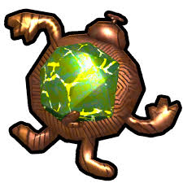
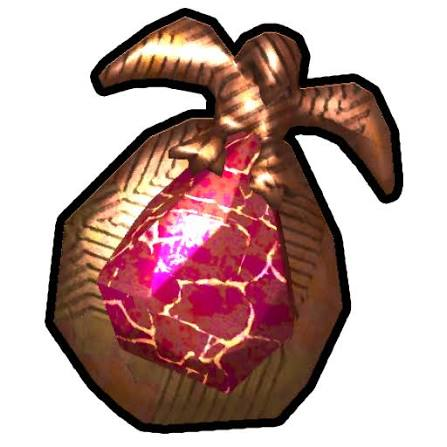
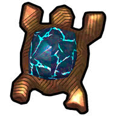
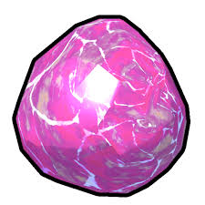

Items
There are many items you can find in the game that will help you on your journey. For now I will only be covering some special items.
Badges
There are 4 special badges you can find in the game. Each one is randomlyfound in a different biome and has different abilities. Using the ability of a badge will also apply a stack of petrification depending on the badge used. Once you have all 4 badges, you will be able to access Nadir.
Badge 1: Scout's Ambition

Scout's ambition provides a 9.6m area of affect around the one it's used on. This area gives infinite stamina for 8 seconds and adds 30 stacks of petrification.
Badge 2: Scout's Generosity

Scout's generosity duplicates the item you aim it at, and applies 25 petrification for normal items and 45 for mystical items.
Badge 3: Scout's Initiative

Scout's Initiative provides .55 slowfall and 3 seconds of windwalker to the user and anyone 12.8m around the user, adding 7 stacks of petrification.
Badge 4: Scout's tenacity

Scout's Tenacity removes all negative status effects from the target and provides 10 seconds of invincibility, adding 10-30 stacks of petrification depending on how much is healed.
Strange Gem

The strange gem is always found behind the peak sitting in the statue, putting all 4 badges into the sash it sits on will turn it into an item called "Scout's Honor" and will bring you to Nadir when used.
Other Items
There are many other items in the game and many are unique in their own ways.
The Mandrake
The mandrake is a rare item. It will appear as a normal health herb until it is picked up, at which point it will begin to scream as long as any scouts are within a certain range. This screaming will swiftly fill the stamina bar with the sleepy effect. There is a secret option the developers included to stop the effect of the mandrake's screaming by turning your in game volume all the way down.